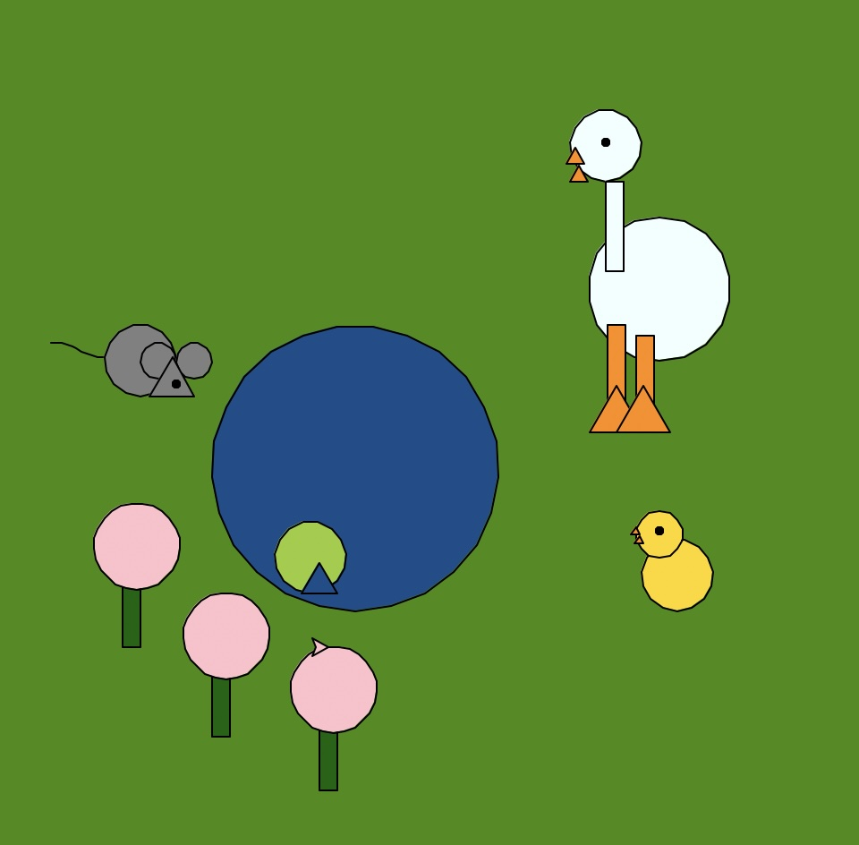
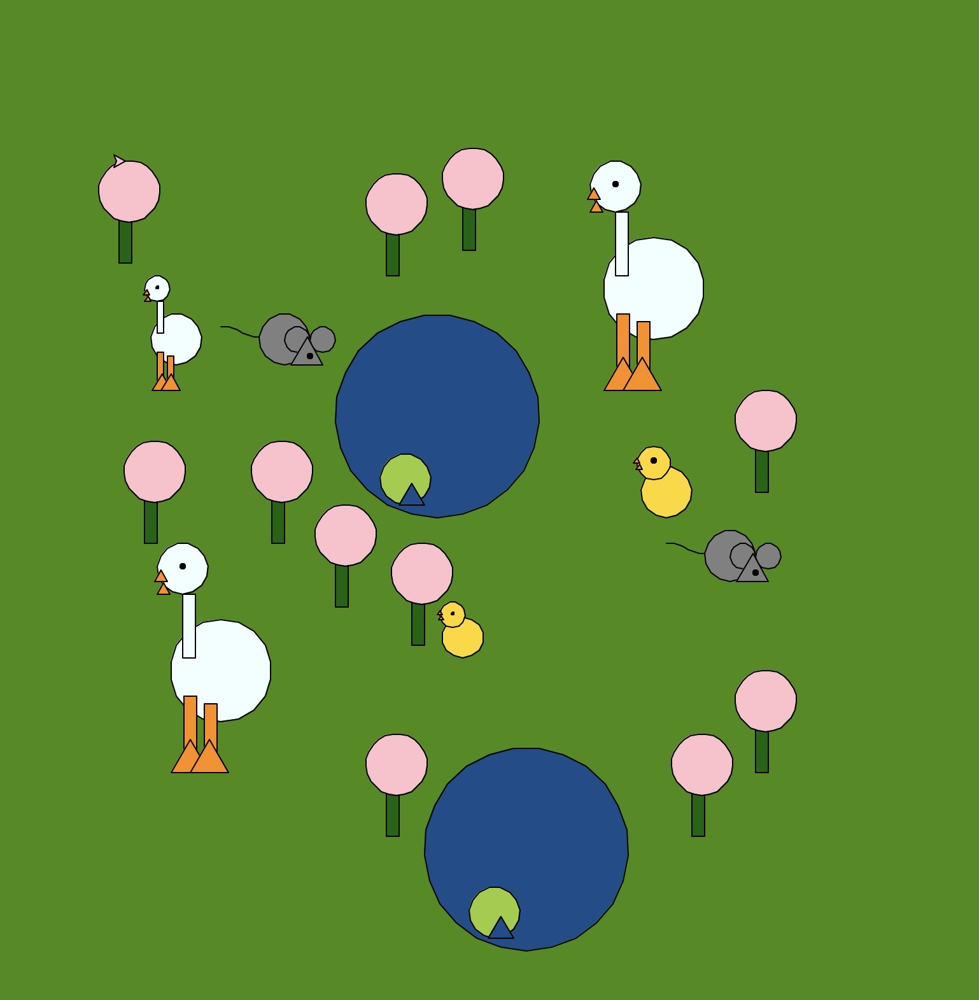

#This loads the Turtle graphics module, which is a built-in library in Python
import turtle
import math
#Here are all the code sections I took from the starter code.
def setup_turtle():
"""Initialize turtle with standard settings"""
t = turtle.Turtle()
t.speed(0) # Fastest speed
screen = turtle.Screen()
screen.title("Turtle Graphics Assignment")
return t, screen
def draw_rectangle(t, width, height, fill_color=None):
"""Draw a rectangle with optional fill"""
if fill_color:
t.fillcolor(fill_color)
t.begin_fill()
for _ in range(2):
t.forward(width)
t.right(90)
t.forward(height)
t.right(90)
if fill_color:
t.end_fill()
def draw_triangle(t, size, fill_color=None):
"""Draw an equilateral triangle with optional fill"""
if fill_color:
t.fillcolor(fill_color)
t.begin_fill()
for _ in range(3):
t.forward(size)
t.left(120)
if fill_color:
t.end_fill()
def draw_circle(t, radius, fill_color=None):
"""Draw a circle with optional fill"""
if fill_color:
t.fillcolor(fill_color)
t.begin_fill()
t.circle(radius)
if fill_color:
t.end_fill()
def draw_curve(t, length, curve_factor, segments=10, fill_color=None):
"""
Draw a curved line using small line segments
Parameters:
- t: turtle object
- length: total length of the curve
- curve_factor: positive for upward curve, negative for downward curve
- segments: number of segments (higher = smoother curve)
- fill_color: optional color to fill if creating a closed shape
"""
if fill_color:
t.fillcolor(fill_color)
t.begin_fill()
segment_length = length / segments
# Save the original heading
original_heading = t.heading()
for i in range(segments):
# Calculate the angle for this segment
angle = curve_factor * math.sin(math.pi * i / segments)
t.right(angle)
t.forward(segment_length)
t.left(angle) # Reset the angle for the next segment
# Reset to original heading
t.setheading(original_heading)
if fill_color:
t.end_fill()
def draw_polygon(t, sides, size, fill_color=None):
"""Draw a regular polygon with given number of sides"""
if fill_color:
t.fillcolor(fill_color)
t.begin_fill()
angle = 360 / sides
for _ in range(sides):
t.forward(size)
t.right(angle)
if fill_color:
t.end_fill()
def jump_to(t, x, y):
"""Move turtle without drawing"""
t.penup()
t.goto(x, y)
t.pendown()
#This is the refactored function to draw a duck. I've generalized the functions so that previously repeated code is simplified.
def draw_duck(t, x, y, scale=1.0, color="azure1", beak_color="DarkOrange"):
"""Draw a duck at position (x, y) with customizable scale and colors"""
#This refactors by generalizing a function for the circles that make up the head, body and eye of the duck.
#I put the colors, position in sizes in lists, and then use a loop to repeat the process of jumping and drawing. I use the zip function to combine parameters from the lists.
#Using x+pos_x and y+pos_y allows me to easily change position and keep everything the same by just changing one position input.
head_position = [(0, 0), (int(30*scale), -int(100*scale)), (0, int(20*scale))]
head_sizes = [int(20*scale), int(40*scale),int(2*scale)]
head_colors = [color, color, "black"]
for (pos_x, pos_y), size, fill_color in zip(head_position, head_sizes, head_colors):
jump_to(t, x + pos_x, y + pos_y)
draw_circle(t, size, fill_color=fill_color)
#This refactored code creates all the rectangles on the body, which includes the neck and legs.
#The same logic in using loops, generalizing functions and using zip is applied here. I repeat these throughout most of my refactored code.
duck_rectangle_positions = [(0,0),(1,-80),(17,-86)]
duck_rectangle_colors=[color,beak_color,beak_color]
for (pos_x, pos_y), fill_color in zip(duck_rectangle_positions, duck_rectangle_colors):
jump_to(t, x + int(pos_x * scale), y + int(pos_y*scale))
draw_rectangle(t, int(10 * scale), int(50 * scale), fill_color=fill_color)
#This refactored code creates all the triangles on the body that form the beak and feet. I vary the positive and size, but maintain color.
beak_positions = [(-int(22 * scale), int(10 * scale)),(-int(20 * scale), 0),(-int(9 * scale), -int(140 * scale)),(int(6 * scale), -int(140 * scale))]
beak_sizes = [int(10 * scale), int(10 * scale), int(30 * scale), int(30 * scale)]
for (pos_x, pos_y), size in zip(beak_positions, beak_sizes):
jump_to(t, x + pos_x, y + pos_y)
draw_triangle(t, size, fill_color=beak_color)
#This is my refactored function to draw a mouse. The main change is generalizing the circles and using lists to change them.
def draw_mouse(t, x, y, scale=1.0, color="grey"):
"""Draw a mouse at position (x, y) with customizable scale and color"""
#This is refactored code for the three main circles in the mouse's body.
#I repeated the same logic used in the duck function to generalize the circle drawing.
mouse_circle_positions=[(0,0),(10,10),(30,10)]
mouse_circle_sizes=[20,10,10]
for (pos_x, pos_y), size in zip(mouse_circle_positions, mouse_circle_sizes):
jump_to(t, x + int(pos_x * scale), y + int(pos_y * scale))
draw_circle(t, int(size * scale), fill_color=color)
#This creates a triangle for the head shape. For the following shapes,most of the function code was left unaltered, but I changed the jump_to equation to be relative to the starting point.
jump_to(t, x + int(5 * scale), y)
draw_triangle(t, int(25 * scale), fill_color=color)
#This creates a circle for the eye.
#It is not grouped with the other circles because in my original drawing, it was drawn on top of the triangle while the other circles were drawn beneath it.
eye_radius=2
jump_to(t,x+20,y+5)
draw_circle(t,eye_radius,fill_color="black")
#This creates the tail using a curved line. The position altered, but the shape was left unchanged.
curve_length=30
curve_c_factor=25
jump_to(t, x - int(50 * scale), y + int(30 * scale))
draw_curve(t, curve_length, curve_c_factor, segments=10, fill_color=None)
#This is my code to draw a flower. The main change is that I define the flower function here and later call it multiple times to reduce the amount of repeated code.
def draw_flower(t,x,y, scale=1.0,fill_color=None):
'''Draw a flower at position (x,y)'''
#This draws the stem.
#I did not generalize the two parts together because, as I understand, polygon gives the same side length, and I wanted a rectangle with different side lengths.
rectangle_lengths=[int(10*scale),int(40*scale)]
jump_to(t, x, y)
draw_rectangle(t,rectangle_lengths[0], rectangle_lengths[1], fill_color="DarkGreen")
#This draws the blossom by using a draw_polygon function.
polygon_lengths=int(25*scale)
polygon_sides=6
jump_to(t,x+5,y+40)
draw_polygon(t,polygon_lengths,polygon_sides,fill_color="pink")
#This is my refactored duckling. Previously, it was made of repeated code for each circle and triangle. So, I generalized repeated functions to be able to draw the same shape in different ways.
def draw_duckling(t,x,y,scale=1.0,color="gold", beak_color="DarkOrange"):
'''Draw a duckling at position (x, y) with customizable scale and colors'''
#This refactored code creates three circles for the head, body and eye of the duckling. I change the position, size and color, with the same logic as previous elements.
duckling_circle_positions=[(0,0),(-10,30),(-10,43)]
duckling_circle_sizes=[20,13,2]
duckling_circle_colors=[color,color,"black"]
for (pos_x, pos_y), size, fill_color in zip(duckling_circle_positions, duckling_circle_sizes, duckling_circle_colors):
jump_to(t, x + int(pos_x * scale), y + int(pos_y * scale))
draw_circle(t, int(size * scale), fill_color=fill_color)
#This refactored code creates two triangles that form the beak. I only needed to vary the position.
beak_positions=[(-26*scale,43*scale),(-24*scale,38*scale)]
for pos_x, pos_y in beak_positions:
jump_to(t, x + int(pos_x), y + int(pos_y))
draw_triangle(t, int(5 * scale), fill_color=beak_color)
#This is my refactored code to draw my pond. I generalized the circle functions, but maintained the seperate triangle function.
def draw_pond(t, x, y):
"""Draw a pond with a lily pad"""
#Here is the refactored code to create the two circles for the pond and lily pad. I use lists for the position, color and radius, and use one circle function with those.
pond_position=[(0,0),(-25,10)]
pond_colors=["DodgerBlue4","OliveDrab3"]
pond_radiuses=[80,20]
for (pos_x, pos_y), fill_color, pond_radiuses in zip(pond_position, pond_colors, pond_radiuses):
jump_to(t, x + pos_x, y + pos_y)
draw_circle(t, pond_radiuses, fill_color=fill_color)
#This refactored code creates the triangle for the lily pad. I put the side length as a variable that I could change, and I put the position in terms of the relationship to the inputted x and y, making it easier to move.
triangle_side=20
jump_to(t, x- 30, y+10)
draw_triangle(t, triangle_side, fill_color="DodgerBlue4")
#This is the creation of my nature scene.
def draw_scene(t):
"""Draws my nature scene from project 2, and then adds more elements using refactored functions."""
# Set background color to green for grass.
screen = t.getscreen()
screen.bgcolor("chartreuse4")
#This calls the duck from my project 2.
draw_duck(t, 140, 200)
#This adds some other ducks for my more complex scene.
#draw_duck(t,-200,-100)
#draw_duck(t,-220,130,scale=0.5)
#This creates a pond with the same position as project 2.
draw_pond(t,0,-40)
#This adds another pond for the more complex scene.
#draw_pond(t,70,-380)
#This creates the mouse from my project 2.
draw_mouse(t, -120, 80)
#This adds another mice for the scene.
#draw_mouse(t,230,-90)
#This creates the duckling from my project 2.
draw_duckling(t,180,-40)
#This adds another duckling for the more complex scene, changing the size.
#draw_duckling(t,20,-150,scale=0.8)
#This draws my flowers. I've commented out those for the more complex scene.
flower_positions=[(-130,-20),(-80,-70),(-20,-100)]#,(-40,-250),(-230,-20),(20,210),(-40,190),(250,20),(200,-250),(250,-200),(-250,200)]
for pos_x, pos_y in flower_positions:
draw_flower(t,pos_x, pos_y)
# This is the main() function that starts off the execution
def main():
t, screen = setup_turtle()
draw_scene(t)
screen.mainloop()
# if this script is executed, call the main() function
# meaning when is file is run directly
if __name__ == "__main__":
main()

